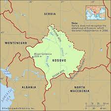
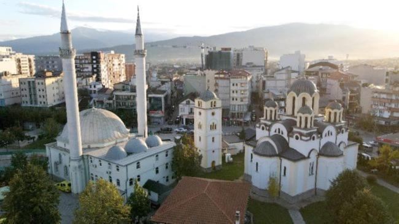
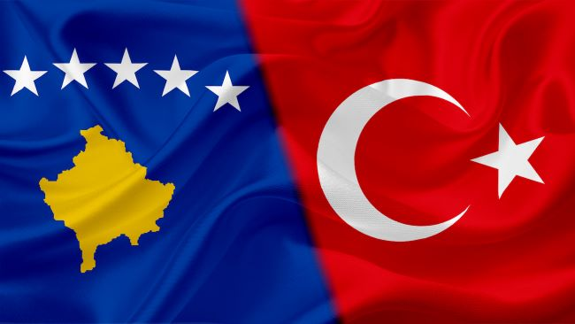

Let's answer some questions first ...
KOSOVA?
Kosovo is a state in the Southeast Europe. It lies at the center of the Balkans, occupying an area of 10.887 km2 with a population about 2 million. It is bordered by Serbia to the north and east, North Macedonia to the southeast, Albania to the southwest, and Montenegro to the west. Pristina is the capital and the largest city at the same time. Before getting into knowing more about Kosovo, let’s answer some of the main questions about this young country.

WHAT IS THE MAIN LANGUAGE?
-Albanian is the official language of Kosovo. According to the 2008 constitution, Turkish, Serbian,Bosnian, and Romanians have official status as relevant municipalities. The Albanian spoken in Kosovo is a subvariety of the Gheg dialect, it is commonly known as ''Kosovarçe''. The majority of Kosovo are Muslim, also there are Christian (Orthodox, Catholic, and Protestant). The majority of the ethnic Ashkali, Bosniaks, Egyptians, Gorani, Romans and Turks are also Muslim.

WHAT ARE THE RELATIONS BETWEEN TURKEY AND KOSOVA
The relations between two states; Kosovo and Turkey are friendly and close, due to the Albanian population of Turkey maintaining close links with Albanians of the Balkans and vice versa and also Turkey maintaining close socio-political, cultural, economic and military ties with Kosovo.Relations between Albanians and Turkey date back from the arrival of the Ottomans to the region in the 15th century. The Albanian diaspora in Turkey was formed during the Ottoman era and early years of the Turkish republic. Now the ambasador is Mr.Çağrı Sakar.
